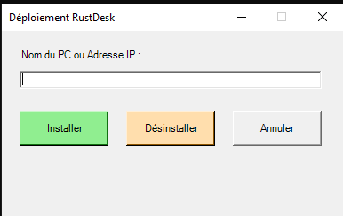
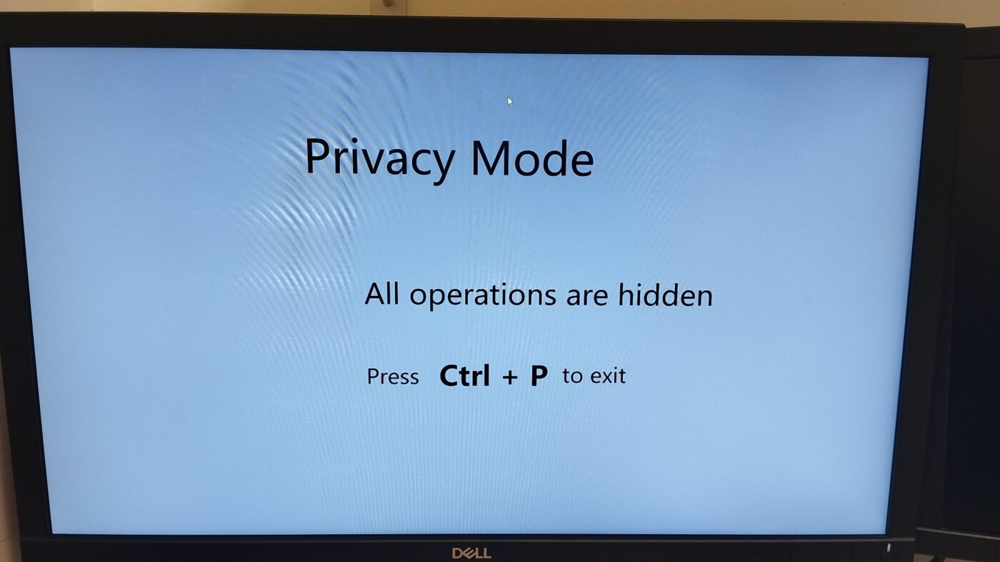

Projets / Prise en main à distance avec RustDesk
Prise en main à distance avec RustDesk
Un serveur RustDesk hébergé en interne, et un client installé et configuré automatiquement sur les postes.
- Contexte
- Alternance, Ensemble scolaire Saint-Benoît
- Stack
- RustDesk · Docker · GPO · PowerShell
- Statut
- En service
- Serveur
- SRV-RUSTDESK
Le besoin
Prendre la main sur un poste pour dépanner un utilisateur, sans passer par un service en ligne : les connexions doivent rester sur le réseau interne.
Avant, on passait par RDP. Deux limites : la connexion n'était possible qu'avec le compte administrateur, et elle ouvrait une session à part au lieu de montrer celle de l'utilisateur. Pour un problème qui se produisait dans sa session, ou sur un poste où il n'est pas administrateur, il fallait se déplacer.
Le serveur
Une machine Ubuntu Server fait tourner RustDesk dans un conteneur Docker : le serveur d'identifiants, le relais, et une API avec console web. Une règle de pare-feu l'empêche de joindre Internet.
- Chiffrement imposé : seuls les clients qui connaissent la clé publique du serveur
peuvent l'utiliser (
ENCRYPTED_ONLY=1). - Sessions web limitées à 4 heures, et rotation des journaux pour ne pas remplir le disque.
- Les données dans un seul dossier, monté en volume, pour simplifier la sauvegarde.
Le déploiement sur les postes
Un script installe le client en silencieux depuis un partage s'il est absent, puis le configure : adresse du serveur, clé publique, mot de passe permanent, mode d'accès. Il retire aussi les raccourcis pour que l'utilisateur ne le lance pas par erreur. Le script est converti en exécutable et lancé par une GPO au démarrage des ordinateurs.
Le mot de passe du client est écrit dans ce script. Les droits NTFS du partage ne laissent lire le dossier qu'aux comptes d'ordinateurs du domaine : le script s'exécute en SYSTEM au démarrage, donc il y accède, mais un utilisateur connecté sur un poste ne peut pas aller voir ce qu'il y a dedans.
Pour un poste isolé, j'ai écrit un petit outil graphique en PowerShell : on saisit le nom ou l'adresse du poste, on clique sur Installer ou Désinstaller, et PsExec fait le reste.

J'ai repris ce besoin, installer une application sur des postes du domaine à distance et sans agent, pour écrire WinPloy, qui remplace cet outil aujourd'hui.
Côté technicien
La console web liste tous les postes reliés au serveur. On peut prendre la main depuis l'application ou directement dans le navigateur, transférer des fichiers, ouvrir un terminal, et ranger les postes dans des carnets d'adresses synchronisés avec le compte du technicien. Le mode confidentialité éteint l'écran de l'utilisateur pendant l'intervention.

Ce que j'en retiens
Le script d'installation m'a demandé plus de travail que le serveur : vérifier si le client est déjà là, le configurer sans fenêtre, enlever les raccourcis, et que tout ça repasse proprement à chaque démarrage.
Je continue à utiliser RDP pour les serveurs. Pour dépanner quelqu'un sur sa session, c'est RustDesk.